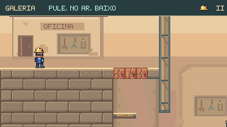
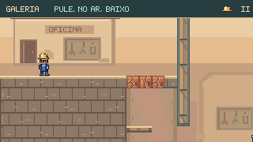

Continuação desta revisão: Trabalhadores, inspetor e arrozais — 16/10.
Textura de lugar.
Movimento com peso.
Uma rodada de acabamento dentro das oito fases: argila, pedra, reboco e madeira com detalhes mais coerentes, além de uma ossada mais definida e uma corrida mais contínua para o Ossabravo.
Compare dentro das fases


ANTESDEPOISBlocos de pedra mais largos, juntas desencontradas e bordas trabalhadas. As tampas rachadas continuam distintas da alvenaria firme.
Terra e reboco
Inclusões discretas na argila e reparos nas paredes. Uma segunda revisão reduziu os pequenos grãos para manter a rolagem limpa.
Pedra e madeira
Fiadas mais largas na oficina e veios mais longos nos tablados. O desenho da madeira acompanha cada plataforma em movimento.
Leitura dos caminhos
As bordas claras continuam indicando as superfícies de apoio. Buracos, tampas quebradas e sinais hidráulicos seguem os estados reais da fase.
Personagens em movimento


Comparações ampliadas dos desenhos usados pelo jogo. Estas poses de inspeção mostram a animação; os percursos abaixo foram gravados com entradas de teclado.
Do começo ao fim da travessia
Quatro percursos completos, sem dano, com física e controles nativos. Simulação a 60 Hz e gravação a 15 quadros por segundo; sem reposicionar Feka ou alterar os relógios durante o percurso.
O que foi conferido
Build, validação dos níveis, sprites e TypeScript concluídos. Capturas repetíveis e movimento reduzido verificados. Física, colisões, progressão e duração dos ataques foram preservadas.
A conferência no navegador usa o hospedeiro de capítulos do jogo, com perfil de teste separado. O relatório registra entrada, movimento, pausa e retorno ao mapa.
Cenários e percursos · Comparação dos sprites · Conferência no navegador